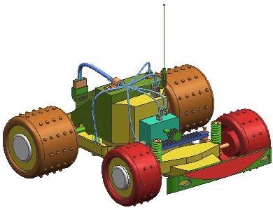

The objective of the projects is to reinforce your comprehension of the course material. Therefore the project is presented with limited instruction. Detailed steps are not given as they were in the classroom activities, but various tips are techniques are provided.
In this project, you will place parts, qualify a part (optional), create paths, import lists, generate reports, and create a formboard.
